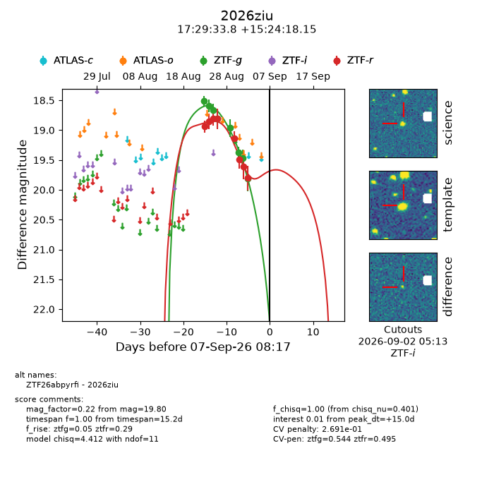
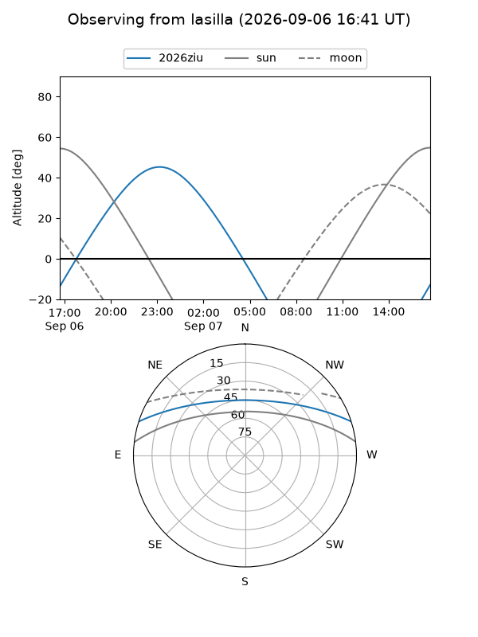
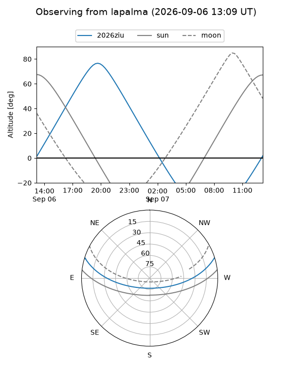
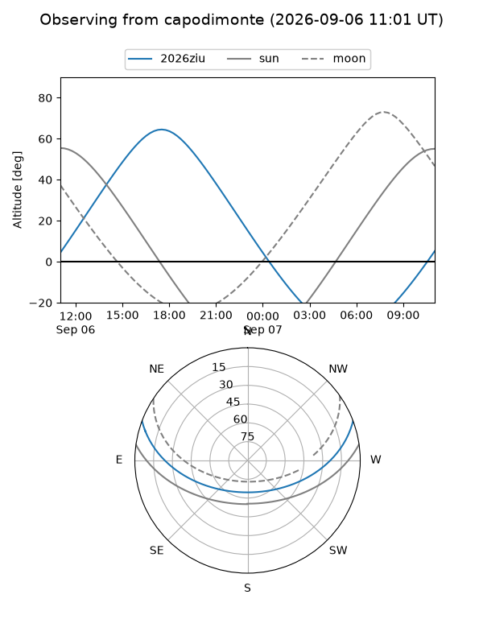
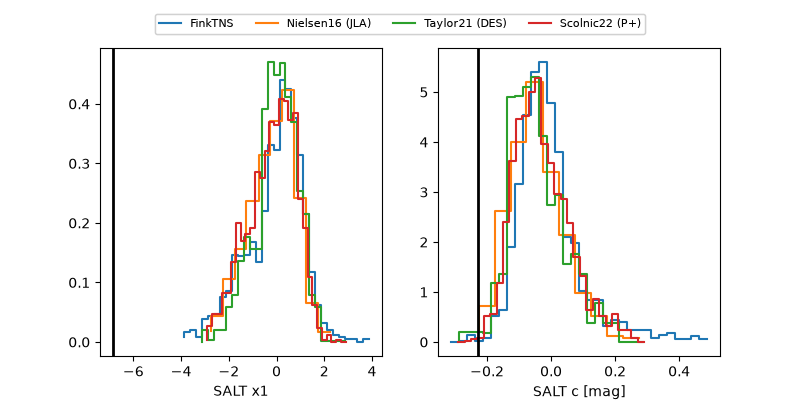

2026ziu
Target 2026ziu at 2026-09-07 08:19
Aliases and brokers:
FINK-ZTF: ztf.fink-portal.org/ZTF26abpyrfi
Lasair-ZTF: lasair-ztf.lsst.ac.uk/objects/ZTF26abpyrfi
ALeRCE-ZTF: alerce.online/object/ZTF26abpyrfi
YSE-PZ: ziggy.ucolick.org/yse/transient_detail/2026ziu
TNS name: wis-tns.org/object/2026ziu
Direct TNS query: direct search
alt names
ZTF26abpyrfi (ztf,fink_ztf)
2026ziu (tns,yse)
Coordinates:
equatorial (ra, dec) = 262.3908,+15.40504
equatorial (HMS+DMS) = 17:29:33.79,+15:24:18.15
galactic (l, b) = (38.1629,+24.90855)
Flags:
TNS type: nan
peak dt: +15.0
likely cv: !!
Photometry:
last ztfg=19.47, ztfr=19.80
7 ztfg, 8 ztfr detections
Lightcurve

Visibility



Additional plots
